pacman::p_load(
tidyverse,
tidymodels,
lubridate,
vip,
rpart.plot,
corrplot,
patchwork,
scales,
caret
)
tidymodels_prefer()
theme_set(theme_minimal())
set.seed(1234)Take Home Exercsise 2 : Predicting Satifaction Score
1 Objective:
The objective of this project is to understand the behaviors behind customer transactions and how socio-demographic factors—such as age, income, and occupation—affect customer transactions. By applying statistical correlation techniques, we aim to identify which personal attributes are the true drivers of financial activity within the Colombian fintech ecosystem.
Building upon this exploratory analysis, this individual component extends the investigation through predictive modelling. Specifically, the study develops models to estimate customer satisfaction levels using demographic, behavioral, and digital engagement variables from the COFINFAD dataset. Linear Regression, Decision Tree, and Random Forest models are applied to analyze how different factors influence customer satisfaction, while visual analytics techniques are used to interpret model performance and identify the most important drivers of customer experience within the fintech platform.
2 Load Packages
Several R packages are used in this analysis to support data manipulation, visualization, and predictive modelling. The tidyverse package is used for data cleaning and transformation, while lubridate assists with handling date and time variables in the transaction dataset. The tidymodels framework provides a unified environment for building and evaluating predictive models. Visualization packages such as corrplot, vip, and rpart.plot are used to produce visual analytics outputs, including correlation matrices, feature importance plots, and decision tree diagrams. These packages collectively support the implementation of the modelling workflow and the generation of interpretable visual insights.
3 Loading Dataset
The COFINFAD (Colombian Fintech Financial Analytics Dataset) consists of two relational datasets provided in CSV format.
The first dataset, customer_data.csv, contains customer-level information for 48,723 individuals, including demographic attributes, product usage indicators, satisfaction metrics, and aggregated behavioral variables.
The second dataset, transactions_data.csv, contains 3,159,157 transaction records collected over a 12-month period in 2023, capturing individual transaction events such as transaction amount, transaction date, and transaction type.
Both datasets are linked through a common identifier, customer_id, which serves as the primary key in the customer dataset and as a foreign key in the transaction dataset.
In this analysis, the datasets are loaded into the environment using the readr package, after which transaction-level data can be aggregated and merged with the customer-level dataset for further modelling and analysis.
customer_data <- read_csv("data/customer_data.csv")
transactions_data <- read_csv("data/transactions_data.csv")4 Data Preparation
The first step is to remove observations with missing target values and ensure the transaction date field is in a proper date format.
customer_data_clean <- customer_data %>%
filter(!is.na(satisfaction_score))
transactions_data_clean <- transactions_data %>%
mutate(date = ymd(date))customer_data_clean %>%
summarise(
n_customers = n(),
missing_target = sum(is.na(satisfaction_score))
)# A tibble: 1 × 2
n_customers missing_target
<int> <int>
1 48723 04.1 Transaction Feature Engineering
The transaction-level dataset is aggregated into customer-level behavioural indicators. These engineered variables capture transaction intensity, magnitude, variability, and recency.
reference_date <- max(transactions_data_clean$date, na.rm = TRUE)
transaction_features <- transactions_data_clean %>%
group_by(customer_id) %>%
summarise(
trans_count_eng = n(),
avg_amount_eng = mean(amount, na.rm = TRUE),
sd_amount_eng = sd(amount, na.rm = TRUE),
total_amount_eng = sum(amount, na.rm = TRUE),
max_amount_eng = max(amount, na.rm = TRUE),
min_amount_eng = min(amount, na.rm = TRUE),
recency_days_eng = as.numeric(reference_date - max(date, na.rm = TRUE)),
active_months_eng = n_distinct(floor_date(date, unit = "month")),
unique_tx_types_eng = n_distinct(type),
weekend_ratio_eng = mean(wday(date) %in% c(1, 7), na.rm = TRUE),
.groups = "drop"
)They are joined to customer data based on customer id
customer_model_data <- customer_data_clean %>%
left_join(transaction_features, by = "customer_id")glimpse(customer_model_data)Rows: 48,723
Columns: 64
$ customer_id <dbl> 93716481, 49020929, 52690950, 23199751, 619…
$ age <dbl> 44, 44, 45, 45, 44, 45, 44, 44, 45, 44, 44,…
$ gender <chr> "Male", "Male", "Male", "Male", "Female", "…
$ location <chr> "Pereira, Risaralda", "Cali, Valle del Cauc…
$ income_bracket <chr> "Very High", "Medium", "High", "High", "Med…
$ occupation <chr> "Engineer", "Construction Worker", "Constru…
$ education_level <chr> "Master", "Bachelor", "Bachelor", "High Sch…
$ marital_status <chr> "Married", "Married", "Married", "Single", …
$ household_size <dbl> 5, 2, 4, 2, 3, 4, 4, 3, 1, 3, 5, 3, 3, 7, 3…
$ acquisition_channel <chr> "Partnership", "Paid Ad", "Paid Ad", "Refer…
$ customer_segment <chr> "occasional", "regular", "inactive", "inact…
$ savings_account <lgl> TRUE, TRUE, TRUE, TRUE, TRUE, TRUE, TRUE, T…
$ credit_card <lgl> TRUE, FALSE, FALSE, FALSE, TRUE, TRUE, TRUE…
$ personal_loan <lgl> FALSE, FALSE, FALSE, FALSE, FALSE, FALSE, F…
$ investment_account <lgl> FALSE, FALSE, TRUE, TRUE, FALSE, TRUE, FALS…
$ insurance_product <lgl> TRUE, FALSE, TRUE, FALSE, FALSE, FALSE, FAL…
$ active_products <dbl> 1, 5, 3, 2, 1, 1, 1, 4, 2, 3, 1, 5, 3, 1, 1…
$ app_logins_frequency <dbl> 15, 30, 4, 15, 19, 15, 44, 22, 7, 11, 7, 30…
$ feature_usage_diversity <dbl> 3, 0, 4, 4, 1, 4, 6, 1, 1, 6, 3, 1, 2, 1, 3…
$ bill_payment_user <lgl> FALSE, TRUE, TRUE, TRUE, FALSE, TRUE, TRUE,…
$ auto_savings_enabled <lgl> FALSE, FALSE, FALSE, FALSE, FALSE, TRUE, FA…
$ credit_utilization_ratio <dbl> 0.17871029, NA, NA, NA, 0.40360553, 0.07786…
$ international_transactions <dbl> 1, 1, 1, 1, 0, 0, 0, 0, 0, 1, 0, 0, 0, 1, 0…
$ failed_transactions <dbl> 0, 0, 0, 1, 0, 0, 1, 1, 0, 0, 1, 0, 0, 1, 0…
$ tx_count <dbl> 76, 10, 10, 23, 18, 15, 24, 45, 134, 13, 18…
$ avg_tx_value <dbl> 1679872.4, 5445810.0, 640335.0, 660180.4, 1…
$ total_tx_volume <dbl> 127670300, 54458100, 6403350, 15184150, 262…
$ first_tx <chr> "5/1/2023", "5/2/2023", "31/1/2023", "10/1/…
$ last_tx <chr> "25/12/2023", "20/12/2023", "12/12/2023", "…
$ base_satisfaction <dbl> 9.213372, 6.073093, 8.198643, 7.529577, 6.6…
$ tx_satisfaction <dbl> 0.380, 0.050, 0.050, 0.115, 0.090, 0.075, 0…
$ product_satisfaction <dbl> 0.6, 0.2, 0.6, 0.4, 0.4, 0.6, 0.4, 0.4, 0.6…
$ satisfaction_score <dbl> 5, 3, 4, 4, 3, 4, 4, 4, 5, 4, 4, 5, 4, 3, 4…
$ nps_score <dbl> -7, -46, -29, -31, -47, -29, -34, -36, -4, …
$ last_survey_date <chr> "16/12/2023", "5/5/2023", "16/11/2023", "7/…
$ support_tickets_count <dbl> 1, 1, 0, 2, 2, 1, 1, 0, 2, 0, 0, 2, 3, 1, 0…
$ resolved_tickets_ratio <dbl> 0.0000000, 1.0000000, 0.0000000, 0.5000000,…
$ app_store_rating <dbl> 3.5, 4.0, 5.0, 4.5, 4.0, 4.0, 5.0, 4.5, 4.5…
$ feedback_sentiment <chr> "Neutral", "Positive", "Positive", "Positiv…
$ feature_requests <chr> "Budgeting tools", NA, NA, "Cryptocurrency …
$ complaint_topics <chr> NA, NA, NA, NA, "App performance", NA, NA, …
$ clv_segment <chr> "Gold", "Bronze", "Gold", "Bronze", "Gold",…
$ monthly_transaction_count <dbl> 1.428571, 1.571429, 2.500000, 1.555556, 2.1…
$ average_transaction_value <dbl> 6054025.0, 2127413.6, 3575915.0, 1513353.6,…
$ total_transaction_volume <dbl> 60540250, 23401550, 35759150, 21186950, 116…
$ transaction_frequency <dbl> 0.03076923, 0.03293413, 0.05000000, 0.04778…
$ last_transaction_date <chr> "5/12/2023", "18/12/2023", "27/10/2023", "3…
$ preferred_transaction_type <chr> "Transfer", "Transfer", "Transfer", "Transf…
$ first_transaction_date <chr> "5/1/2023", "5/2/2023", "31/1/2023", "10/1/…
$ weekend_transaction_ratio <dbl> 0.30000000, 0.18181818, 0.30000000, 0.14285…
$ avg_daily_transactions <dbl> 0.03076923, 0.03293413, 0.05000000, 0.04778…
$ customer_tenure <dbl> 11.633333, 11.500000, 8.766667, 10.733333, …
$ churn_probability <dbl> 0.3622688, 0.1817896, 0.3212651, 0.3366287,…
$ customer_lifetime_value <dbl> 312414808, 167022286, 19403711, 35978105, 3…
$ trans_count_eng <int> 76, 10, 10, 23, 18, 15, 24, 45, 134, 13, 18…
$ avg_amount_eng <dbl> 1679872.4, 5445810.0, 640335.0, 660180.4, 1…
$ sd_amount_eng <dbl> 1348358.8, 4143822.5, 405108.7, 305159.6, 1…
$ total_amount_eng <dbl> 127670300, 54458100, 6403350, 15184150, 262…
$ max_amount_eng <dbl> 7068550, 16129100, 1663650, 1314900, 422420…
$ min_amount_eng <dbl> 370400, 1391700, 215400, 163600, 2068850, 1…
$ recency_days_eng <dbl> NaN, NaN, NaN, NaN, NaN, NaN, NaN, NaN, NaN…
$ active_months_eng <int> 1, 1, 1, 1, 1, 1, 1, 1, 1, 1, 1, 1, 1, 1, 1…
$ unique_tx_types_eng <int> 4, 4, 4, 4, 4, 4, 4, 4, 4, 3, 4, 4, 4, 4, 3…
$ weekend_ratio_eng <dbl> 0, 0, 0, 0, 0, 0, 0, 0, 0, 0, 0, 0, 0, 0, 0…These engineered variables complement the summary variables already present in the customer table and strengthen the behavioural representation of each customer.
4.2 Feature Selection
To build a robust predictive model, irrelevant and leakage-prone variables should be removed.
In particular, the following types of variables are excluded:
- unique identifiers such as
customer_id - raw date fields
- variables that may directly leak survey outcomes
- variables too closely tied to the satisfaction survey process
Examples of likely leakage variables include:
base_satisfactiontx_satisfactionproduct_satisfactionnps_scorelast_survey_date
These variables are either conceptually very close to the target or likely measured alongside the same survey instrument, which could introduce information leakage into the predictive model.
leakage_vars <- c(
"customer_id",
"first_tx",
"last_tx",
"last_survey_date",
"last_transaction_date",
"first_transaction_date",
"base_satisfaction",
"tx_satisfaction",
"product_satisfaction",
"nps_score"
)
model_data <- customer_model_data %>%
select(-any_of(leakage_vars))After removing leakage variables, also remove duplicate transaction summary variables already present in the dataset.
redundant_vars <- c(
"tx_count",
"avg_tx_value",
"total_tx_volume",
"monthly_transaction_count",
"average_transaction_value",
"total_transaction_volume",
"transaction_frequency"
)
model_data <- customer_model_data %>%
select(-any_of(c(leakage_vars, redundant_vars)))Check current features:
glimpse(model_data)Rows: 48,723
Columns: 47
$ age <dbl> 44, 44, 45, 45, 44, 45, 44, 44, 45, 44, 44,…
$ gender <chr> "Male", "Male", "Male", "Male", "Female", "…
$ location <chr> "Pereira, Risaralda", "Cali, Valle del Cauc…
$ income_bracket <chr> "Very High", "Medium", "High", "High", "Med…
$ occupation <chr> "Engineer", "Construction Worker", "Constru…
$ education_level <chr> "Master", "Bachelor", "Bachelor", "High Sch…
$ marital_status <chr> "Married", "Married", "Married", "Single", …
$ household_size <dbl> 5, 2, 4, 2, 3, 4, 4, 3, 1, 3, 5, 3, 3, 7, 3…
$ acquisition_channel <chr> "Partnership", "Paid Ad", "Paid Ad", "Refer…
$ customer_segment <chr> "occasional", "regular", "inactive", "inact…
$ savings_account <lgl> TRUE, TRUE, TRUE, TRUE, TRUE, TRUE, TRUE, T…
$ credit_card <lgl> TRUE, FALSE, FALSE, FALSE, TRUE, TRUE, TRUE…
$ personal_loan <lgl> FALSE, FALSE, FALSE, FALSE, FALSE, FALSE, F…
$ investment_account <lgl> FALSE, FALSE, TRUE, TRUE, FALSE, TRUE, FALS…
$ insurance_product <lgl> TRUE, FALSE, TRUE, FALSE, FALSE, FALSE, FAL…
$ active_products <dbl> 1, 5, 3, 2, 1, 1, 1, 4, 2, 3, 1, 5, 3, 1, 1…
$ app_logins_frequency <dbl> 15, 30, 4, 15, 19, 15, 44, 22, 7, 11, 7, 30…
$ feature_usage_diversity <dbl> 3, 0, 4, 4, 1, 4, 6, 1, 1, 6, 3, 1, 2, 1, 3…
$ bill_payment_user <lgl> FALSE, TRUE, TRUE, TRUE, FALSE, TRUE, TRUE,…
$ auto_savings_enabled <lgl> FALSE, FALSE, FALSE, FALSE, FALSE, TRUE, FA…
$ credit_utilization_ratio <dbl> 0.17871029, NA, NA, NA, 0.40360553, 0.07786…
$ international_transactions <dbl> 1, 1, 1, 1, 0, 0, 0, 0, 0, 1, 0, 0, 0, 1, 0…
$ failed_transactions <dbl> 0, 0, 0, 1, 0, 0, 1, 1, 0, 0, 1, 0, 0, 1, 0…
$ satisfaction_score <dbl> 5, 3, 4, 4, 3, 4, 4, 4, 5, 4, 4, 5, 4, 3, 4…
$ support_tickets_count <dbl> 1, 1, 0, 2, 2, 1, 1, 0, 2, 0, 0, 2, 3, 1, 0…
$ resolved_tickets_ratio <dbl> 0.0000000, 1.0000000, 0.0000000, 0.5000000,…
$ app_store_rating <dbl> 3.5, 4.0, 5.0, 4.5, 4.0, 4.0, 5.0, 4.5, 4.5…
$ feedback_sentiment <chr> "Neutral", "Positive", "Positive", "Positiv…
$ feature_requests <chr> "Budgeting tools", NA, NA, "Cryptocurrency …
$ complaint_topics <chr> NA, NA, NA, NA, "App performance", NA, NA, …
$ clv_segment <chr> "Gold", "Bronze", "Gold", "Bronze", "Gold",…
$ preferred_transaction_type <chr> "Transfer", "Transfer", "Transfer", "Transf…
$ weekend_transaction_ratio <dbl> 0.30000000, 0.18181818, 0.30000000, 0.14285…
$ avg_daily_transactions <dbl> 0.03076923, 0.03293413, 0.05000000, 0.04778…
$ customer_tenure <dbl> 11.633333, 11.500000, 8.766667, 10.733333, …
$ churn_probability <dbl> 0.3622688, 0.1817896, 0.3212651, 0.3366287,…
$ customer_lifetime_value <dbl> 312414808, 167022286, 19403711, 35978105, 3…
$ trans_count_eng <int> 76, 10, 10, 23, 18, 15, 24, 45, 134, 13, 18…
$ avg_amount_eng <dbl> 1679872.4, 5445810.0, 640335.0, 660180.4, 1…
$ sd_amount_eng <dbl> 1348358.8, 4143822.5, 405108.7, 305159.6, 1…
$ total_amount_eng <dbl> 127670300, 54458100, 6403350, 15184150, 262…
$ max_amount_eng <dbl> 7068550, 16129100, 1663650, 1314900, 422420…
$ min_amount_eng <dbl> 370400, 1391700, 215400, 163600, 2068850, 1…
$ recency_days_eng <dbl> NaN, NaN, NaN, NaN, NaN, NaN, NaN, NaN, NaN…
$ active_months_eng <int> 1, 1, 1, 1, 1, 1, 1, 1, 1, 1, 1, 1, 1, 1, 1…
$ unique_tx_types_eng <int> 4, 4, 4, 4, 4, 4, 4, 4, 4, 3, 4, 4, 4, 4, 3…
$ weekend_ratio_eng <dbl> 0, 0, 0, 0, 0, 0, 0, 0, 0, 0, 0, 0, 0, 0, 0…4.2.1 Remove Unnecessary features
remove_vars <- c(
# future information variables
"churn_probability",
"customer_lifetime_value",
# text variables not used in modelling
"location",
"feature_requests",
"complaint_topics",
# high-cardinality variable
"occupation",
# redundant transaction summary variable
"weekend_transaction_ratio"
)
model_data <- model_data %>%
select(-any_of(remove_vars))
remove_more <- c(
"total_amount_eng",
"unique_tx_types_eng",
"min_amount_eng"
)
model_data <- model_data %>%
select(-any_of(remove_more))names(model_data) [1] "age" "gender"
[3] "income_bracket" "education_level"
[5] "marital_status" "household_size"
[7] "acquisition_channel" "customer_segment"
[9] "savings_account" "credit_card"
[11] "personal_loan" "investment_account"
[13] "insurance_product" "active_products"
[15] "app_logins_frequency" "feature_usage_diversity"
[17] "bill_payment_user" "auto_savings_enabled"
[19] "credit_utilization_ratio" "international_transactions"
[21] "failed_transactions" "satisfaction_score"
[23] "support_tickets_count" "resolved_tickets_ratio"
[25] "app_store_rating" "feedback_sentiment"
[27] "clv_segment" "preferred_transaction_type"
[29] "avg_daily_transactions" "customer_tenure"
[31] "trans_count_eng" "avg_amount_eng"
[33] "sd_amount_eng" "max_amount_eng"
[35] "recency_days_eng" "active_months_eng"
[37] "weekend_ratio_eng" 4.2.2 Correlation Analysis of Numeric Predictors
This step helps identify strong relationships between predictors, which may indicate redundancy or multicollinearity. Understanding these relationships supports more stable model development and clearer interpretation.
numeric_data <- model_data %>%
select(where(is.numeric))cor_matrix <- numeric_data %>%
select(-satisfaction_score) %>%
cor(use = "pairwise.complete.obs")
cor_matrix age household_size active_products
age 1.000000e+00 -0.0018904645 5.666596e-03
household_size -1.890464e-03 1.0000000000 -5.885494e-03
active_products 5.666596e-03 -0.0058854944 1.000000e+00
app_logins_frequency 5.814772e-03 0.0021753468 -7.104032e-06
feature_usage_diversity 2.619972e-01 -0.0013424481 3.873412e-03
credit_utilization_ratio -6.256504e-05 0.0001439245 -2.757161e-04
international_transactions -5.083004e-03 -0.0032834012 -2.139703e-03
failed_transactions -3.209013e-03 -0.0035482211 3.318095e-03
support_tickets_count 7.500501e-03 -0.0108234825 4.615529e-03
resolved_tickets_ratio 7.931414e-04 -0.0045976544 5.933214e-03
app_store_rating -3.890837e-03 -0.0002216323 6.185158e-03
avg_daily_transactions -2.270313e-04 -0.0060380721 -1.085255e-03
customer_tenure -1.673004e-03 -0.0003585324 -2.404398e-03
trans_count_eng 7.606780e-03 0.0053538156 -1.066643e-02
avg_amount_eng 1.647793e-03 0.0089380624 -1.284151e-02
sd_amount_eng -5.089785e-03 0.0115930177 -1.126301e-02
max_amount_eng -5.696795e-03 0.0131140428 -1.136815e-02
recency_days_eng NA NA NA
active_months_eng NA NA NA
weekend_ratio_eng NA NA NA
app_logins_frequency feature_usage_diversity
age 5.814772e-03 0.2619972418
household_size 2.175347e-03 -0.0013424481
active_products -7.104032e-06 0.0038734123
app_logins_frequency 1.000000e+00 -0.0103416645
feature_usage_diversity -1.034166e-02 1.0000000000
credit_utilization_ratio 3.421408e-03 -0.0033384099
international_transactions 5.493689e-03 0.0011906455
failed_transactions 3.301623e-03 0.0058929871
support_tickets_count -4.812624e-04 -0.0008731879
resolved_tickets_ratio 5.952539e-03 -0.0022107415
app_store_rating -7.251385e-03 -0.0038899701
avg_daily_transactions -4.349112e-03 -0.0033412091
customer_tenure 3.276367e-03 0.0090618386
trans_count_eng 8.494227e-03 -0.0171802040
avg_amount_eng 6.553422e-03 -0.0107525559
sd_amount_eng -8.228662e-04 -0.0128994944
max_amount_eng 4.520678e-03 -0.0179036591
recency_days_eng NA NA
active_months_eng NA NA
weekend_ratio_eng NA NA
credit_utilization_ratio international_transactions
age -6.256504e-05 -0.0050830038
household_size 1.439245e-04 -0.0032834012
active_products -2.757161e-04 -0.0021397033
app_logins_frequency 3.421408e-03 0.0054936895
feature_usage_diversity -3.338410e-03 0.0011906455
credit_utilization_ratio 1.000000e+00 0.0010203592
international_transactions 1.020359e-03 1.0000000000
failed_transactions -1.282701e-03 0.0013780738
support_tickets_count -5.879672e-04 -0.0113704528
resolved_tickets_ratio -3.889665e-04 -0.0079632766
app_store_rating -4.654439e-03 0.0020894115
avg_daily_transactions 1.290921e-03 -0.0032697874
customer_tenure -1.880864e-03 -0.0001388438
trans_count_eng -8.673153e-03 -0.0106365950
avg_amount_eng -6.182283e-03 -0.0088155241
sd_amount_eng -4.211828e-03 -0.0072449081
max_amount_eng -4.701441e-03 -0.0011921950
recency_days_eng NA NA
active_months_eng NA NA
weekend_ratio_eng NA NA
failed_transactions support_tickets_count
age -0.0032090128 0.0075005011
household_size -0.0035482211 -0.0108234825
active_products 0.0033180946 0.0046155288
app_logins_frequency 0.0033016231 -0.0004812624
feature_usage_diversity 0.0058929871 -0.0008731879
credit_utilization_ratio -0.0012827007 -0.0005879672
international_transactions 0.0013780738 -0.0113704528
failed_transactions 1.0000000000 0.0075240061
support_tickets_count 0.0075240061 1.0000000000
resolved_tickets_ratio 0.0046158352 0.6169275178
app_store_rating 0.0025021924 -0.0051310304
avg_daily_transactions 0.0082765098 -0.0027977126
customer_tenure -0.0011483427 0.0031318579
trans_count_eng -0.0007504236 -0.0046945082
avg_amount_eng 0.0026935987 -0.0032918504
sd_amount_eng 0.0032132757 -0.0048760401
max_amount_eng 0.0018334556 -0.0069949380
recency_days_eng NA NA
active_months_eng NA NA
weekend_ratio_eng NA NA
resolved_tickets_ratio app_store_rating
age 0.0007931414 -0.0038908370
household_size -0.0045976544 -0.0002216323
active_products 0.0059332140 0.0061851583
app_logins_frequency 0.0059525387 -0.0072513848
feature_usage_diversity -0.0022107415 -0.0038899701
credit_utilization_ratio -0.0003889665 -0.0046544390
international_transactions -0.0079632766 0.0020894115
failed_transactions 0.0046158352 0.0025021924
support_tickets_count 0.6169275178 -0.0051310304
resolved_tickets_ratio 1.0000000000 -0.0040270505
app_store_rating -0.0040270505 1.0000000000
avg_daily_transactions -0.0045670263 0.0041255983
customer_tenure -0.0015480863 -0.0009010060
trans_count_eng -0.0013526236 0.0013746282
avg_amount_eng -0.0065180693 -0.0133081876
sd_amount_eng -0.0064386709 -0.0172430731
max_amount_eng -0.0040841202 -0.0150129203
recency_days_eng NA NA
active_months_eng NA NA
weekend_ratio_eng NA NA
avg_daily_transactions customer_tenure
age -0.0002270313 -0.0016730041
household_size -0.0060380721 -0.0003585324
active_products -0.0010852554 -0.0024043978
app_logins_frequency -0.0043491120 0.0032763674
feature_usage_diversity -0.0033412091 0.0090618386
credit_utilization_ratio 0.0012909205 -0.0018808637
international_transactions -0.0032697874 -0.0001388438
failed_transactions 0.0082765098 -0.0011483427
support_tickets_count -0.0027977126 0.0031318579
resolved_tickets_ratio -0.0045670263 -0.0015480863
app_store_rating 0.0041255983 -0.0009010060
avg_daily_transactions 1.0000000000 0.0610489465
customer_tenure 0.0610489465 1.0000000000
trans_count_eng -0.0021503161 -0.0009650433
avg_amount_eng 0.0023296334 -0.0154553451
sd_amount_eng -0.0004404727 -0.0110801634
max_amount_eng -0.0025345346 -0.0109381986
recency_days_eng NA NA
active_months_eng NA NA
weekend_ratio_eng NA NA
trans_count_eng avg_amount_eng sd_amount_eng
age 0.0076067801 0.001647793 -0.0050897846
household_size 0.0053538156 0.008938062 0.0115930177
active_products -0.0106664256 -0.012841511 -0.0112630128
app_logins_frequency 0.0084942268 0.006553422 -0.0008228662
feature_usage_diversity -0.0171802040 -0.010752556 -0.0128994944
credit_utilization_ratio -0.0086731529 -0.006182283 -0.0042118282
international_transactions -0.0106365950 -0.008815524 -0.0072449081
failed_transactions -0.0007504236 0.002693599 0.0032132757
support_tickets_count -0.0046945082 -0.003291850 -0.0048760401
resolved_tickets_ratio -0.0013526236 -0.006518069 -0.0064386709
app_store_rating 0.0013746282 -0.013308188 -0.0172430731
avg_daily_transactions -0.0021503161 0.002329633 -0.0004404727
customer_tenure -0.0009650433 -0.015455345 -0.0110801634
trans_count_eng 1.0000000000 0.027517913 0.0298579642
avg_amount_eng 0.0275179133 1.000000000 0.9224517101
sd_amount_eng 0.0298579642 0.922451710 1.0000000000
max_amount_eng 0.2113566216 0.812998393 0.9007257535
recency_days_eng NA NA NA
active_months_eng NA NA NA
weekend_ratio_eng NA NA NA
max_amount_eng recency_days_eng active_months_eng
age -0.005696795 NA NA
household_size 0.013114043 NA NA
active_products -0.011368151 NA NA
app_logins_frequency 0.004520678 NA NA
feature_usage_diversity -0.017903659 NA NA
credit_utilization_ratio -0.004701441 NA NA
international_transactions -0.001192195 NA NA
failed_transactions 0.001833456 NA NA
support_tickets_count -0.006994938 NA NA
resolved_tickets_ratio -0.004084120 NA NA
app_store_rating -0.015012920 NA NA
avg_daily_transactions -0.002534535 NA NA
customer_tenure -0.010938199 NA NA
trans_count_eng 0.211356622 NA NA
avg_amount_eng 0.812998393 NA NA
sd_amount_eng 0.900725753 NA NA
max_amount_eng 1.000000000 NA NA
recency_days_eng NA NA NA
active_months_eng NA NA NA
weekend_ratio_eng NA NA NA
weekend_ratio_eng
age NA
household_size NA
active_products NA
app_logins_frequency NA
feature_usage_diversity NA
credit_utilization_ratio NA
international_transactions NA
failed_transactions NA
support_tickets_count NA
resolved_tickets_ratio NA
app_store_rating NA
avg_daily_transactions NA
customer_tenure NA
trans_count_eng NA
avg_amount_eng NA
sd_amount_eng NA
max_amount_eng NA
recency_days_eng NA
active_months_eng NA
weekend_ratio_eng NAcorrplot(
cor_matrix,
method = "color",
type = "upper",
tl.cex = 0.7,
number.cex = 0.6
)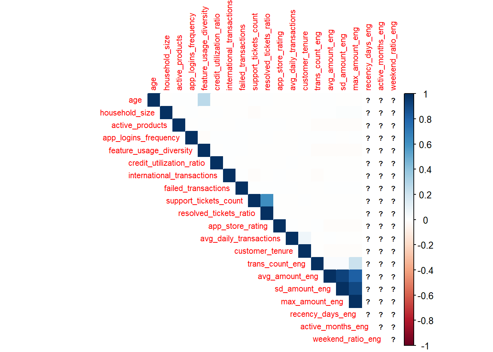
Identify Highly correlated Predictors
high_corr <- findCorrelation(cor_matrix, cutoff = 0.9)
names(numeric_data)[high_corr][1] "sd_amount_eng" "avg_amount_eng"A correlation heatmap was generated to visualize relationships among numeric predictors. The analysis identified that sd_amount_eng and avg_amount_eng are highly correlated, with a correlation coefficient greater than the threshold of 0.9.
This high correlation indicates that both variables capture similar information regarding transaction magnitude. In such cases, it is advisable to remove one of the variables to reduce redundancy while preserving the essential behavioural signal.
Between the two variables:
avg_amount_eng represents the average transaction value of a customer.
sd_amount_eng measures the variability of transaction values.
Since average transaction value is generally more interpretable and widely used in behavioural analytics, sd_amount_eng was removed from the feature set.
model_data <- model_data %>%
select(-sd_amount_eng)Final Set of Predictors
names(model_data) [1] "age" "gender"
[3] "income_bracket" "education_level"
[5] "marital_status" "household_size"
[7] "acquisition_channel" "customer_segment"
[9] "savings_account" "credit_card"
[11] "personal_loan" "investment_account"
[13] "insurance_product" "active_products"
[15] "app_logins_frequency" "feature_usage_diversity"
[17] "bill_payment_user" "auto_savings_enabled"
[19] "credit_utilization_ratio" "international_transactions"
[21] "failed_transactions" "satisfaction_score"
[23] "support_tickets_count" "resolved_tickets_ratio"
[25] "app_store_rating" "feedback_sentiment"
[27] "clv_segment" "preferred_transaction_type"
[29] "avg_daily_transactions" "customer_tenure"
[31] "trans_count_eng" "avg_amount_eng"
[33] "max_amount_eng" "recency_days_eng"
[35] "active_months_eng" "weekend_ratio_eng" length(setdiff(names(model_data), "satisfaction_score"))[1] 354.3 Data Splitting
The dataset is split into training, validation, and test sets using a 70/15/15 structure.
set.seed(1234)
initial_split_obj <- initial_split(model_data, prop = 0.70)
train_data <- training(initial_split_obj)
temp_data <- testing(initial_split_obj)
set.seed(1234)
temp_split_obj <- initial_split(temp_data, prop = 0.50)
valid_data <- training(temp_split_obj)
test_data <- testing(temp_split_obj)4.4 Preprocessing pipeline
A preprocessing pipeline was implemented using the recipespackage to ensure consistent data preparation across all models. The pipeline included median imputation for numeric variables, mode imputation for categorical variables, dummy encoding of nominal predictors, removal of zero-variance predictors, and normalization of numeric variables. While tree-based models are generally insensitive to scaling, normalization was included to ensure compatibility with linear regression and maintain a unified modelling workflow.
This recipe includes:
dummy encoding of categorical variables,
median imputation for numeric variables,
mode imputation for nominal variables,
removal of zero variance predictors,
normalization of numeric variables.
base_recipe <- recipe(satisfaction_score ~ ., data = train_data) %>%
step_impute_median(all_numeric_predictors()) %>%
step_impute_mode(all_nominal_predictors()) %>%
step_dummy(all_nominal_predictors()) %>%
step_zv(all_predictors()) %>%
step_normalize(all_numeric_predictors())base_recipe5 Linear Regression Model
Linear regression provides a simple and interpretable benchmark.
lm_spec <- linear_reg() %>%
set_engine("lm")
lm_workflow <- workflow() %>%
add_recipe(base_recipe) %>%
add_model(lm_spec)
lm_fit <- fit(lm_workflow, data = train_data)reg_metrics <- metric_set(rmse, mae, rsq)5.1 Validation performance:
lm_valid_pred <- predict(lm_fit, new_data = valid_data) %>%
bind_cols(valid_data %>% select(satisfaction_score))
lm_valid_metrics <- reg_metrics(
lm_valid_pred,
truth = satisfaction_score,
estimate = .pred
)
lm_valid_metrics# A tibble: 3 × 3
.metric .estimator .estimate
<chr> <chr> <dbl>
1 rmse standard 0.577
2 mae standard 0.426
3 rsq standard 0.02335.2 Predicted vs Actual Plot
ggplot(lm_valid_pred, aes(x = satisfaction_score, y = .pred)) +
geom_point(alpha = 0.35) +
geom_abline(slope = 1, intercept = 0, linetype = "dashed", color = "red") +
labs(
title = "Linear Regression: Predicted vs Actual",
x = "Actual Satisfaction Score",
y = "Predicted Satisfaction Score"
)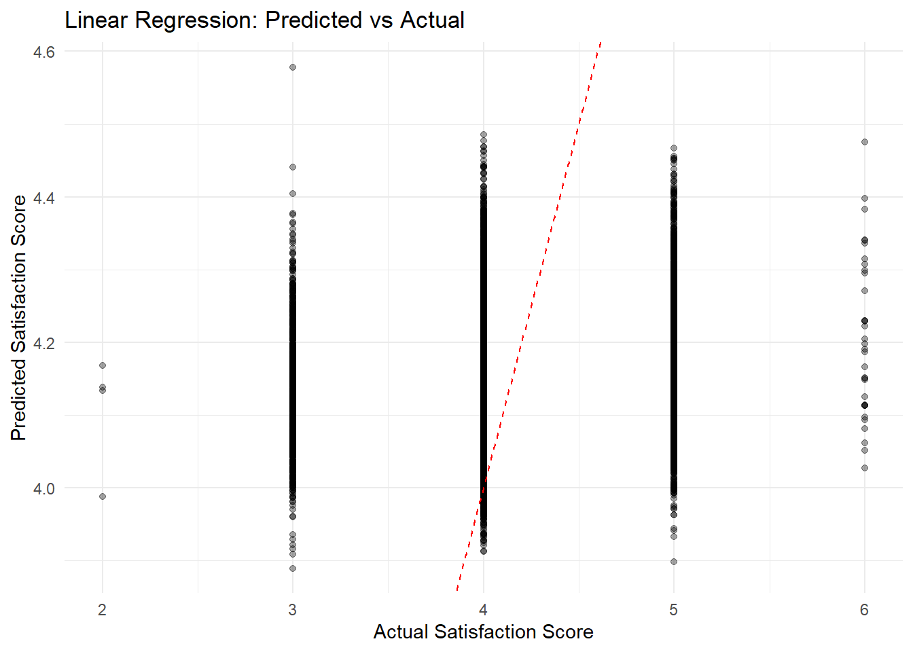
5.3 Residual Plot
lm_valid_pred <- lm_valid_pred %>%
mutate(residual = satisfaction_score - .pred)
ggplot(lm_valid_pred, aes(x = .pred, y = residual)) +
geom_point(alpha = 0.35) +
geom_hline(yintercept = 0, linetype = "dashed", color = "red") +
labs(
title = "Linear Regression: Residual Plot",
x = "Predicted Satisfaction Score",
y = "Residual"
)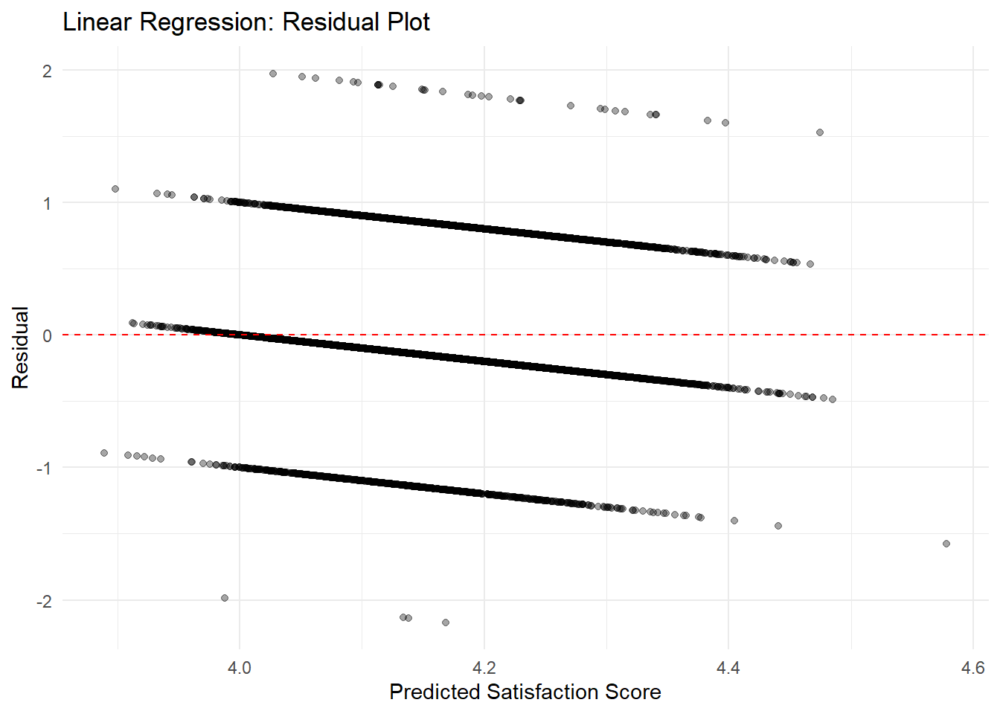
5.4 Coefficient Interpretation
This visualization highlights the strongest linear predictors of satisfaction.
lm_fit_engine <- extract_fit_parsnip(lm_fit)$fit
lm_coef <- broom::tidy(lm_fit_engine) %>%
filter(term != "(Intercept)") %>%
mutate(abs_estimate = abs(estimate)) %>%
arrange(desc(abs_estimate)) %>%
slice_head(n = 15)
ggplot(lm_coef, aes(x = reorder(term, abs_estimate), y = estimate)) +
geom_col() +
coord_flip() +
labs(
title = "Linear Regression: Top 15 Coefficients",
x = "Predictor",
y = "Coefficient Estimate"
)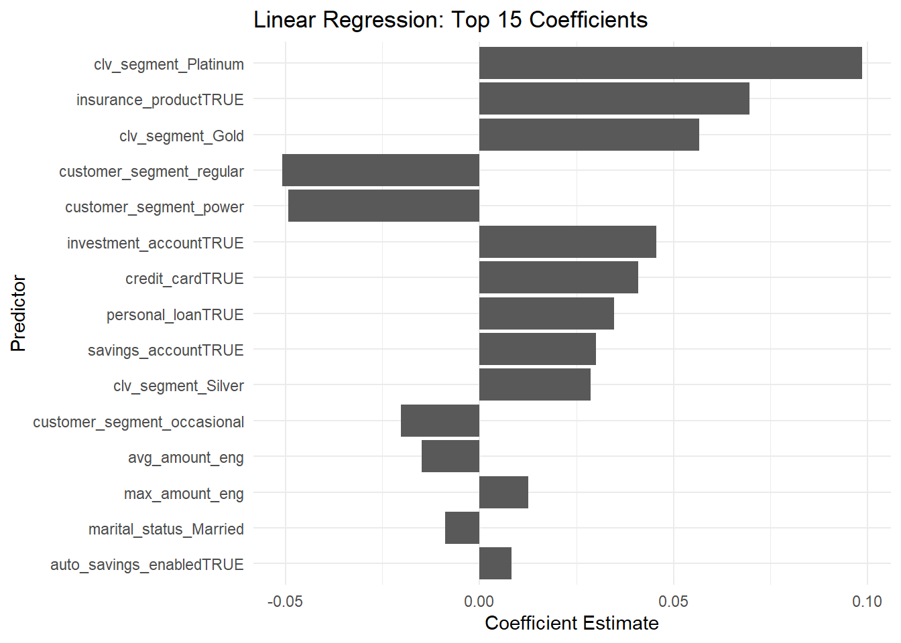
6 Decision Tree Regression Model
Decision Tree Regression is useful because it captures non-linear relationships and produces an interpretable rule-based structure.
tree_spec <- decision_tree(
mode = "regression",
tree_depth = tune(),
cost_complexity = tune(),
min_n = tune()
) %>%
set_engine("rpart")To tune the tree model, 5-fold cross-validation is performed on the training set.
set.seed(1234)
cv_folds <- vfold_cv(train_data, v = 5)tree_grid <- grid_regular(
tree_depth(range = c(2L, 10L)),
cost_complexity(range = c(-4, -1)),
min_n(range = c(5L, 30L)),
levels = 4
)tree_workflow <- workflow() %>%
add_recipe(base_recipe) %>%
add_model(tree_spec)tree_tuned <- tune_grid(
tree_workflow,
resamples = cv_folds,
grid = tree_grid,
metrics = reg_metrics
)6.1 Best Validation Settings
show_best(tree_tuned, metric = "rmse")# A tibble: 5 × 9
cost_complexity tree_depth min_n .metric .estimator mean n std_err
<dbl> <int> <int> <chr> <chr> <dbl> <int> <dbl>
1 0.001 7 5 rmse standard 0.573 5 0.00320
2 0.001 7 13 rmse standard 0.573 5 0.00320
3 0.001 7 21 rmse standard 0.573 5 0.00320
4 0.001 7 30 rmse standard 0.573 5 0.00320
5 0.001 10 5 rmse standard 0.573 5 0.00320
# ℹ 1 more variable: .config <chr>best_tree <- select_best(tree_tuned, metric = "rmse")
final_tree_workflow <- finalize_workflow(tree_workflow, best_tree)
final_tree_fit <- fit(final_tree_workflow, data = train_data)6.2 Validation Performance
tree_valid_pred <- predict(final_tree_fit, new_data = valid_data) %>%
bind_cols(valid_data %>% select(satisfaction_score))
tree_valid_metrics <- reg_metrics(
tree_valid_pred,
truth = satisfaction_score,
estimate = .pred
)
tree_valid_metrics# A tibble: 3 × 3
.metric .estimator .estimate
<chr> <chr> <dbl>
1 rmse standard 0.580
2 mae standard 0.430
3 rsq standard 0.01186.3 Predicted Vs Actual Plot
ggplot(tree_valid_pred, aes(x = satisfaction_score, y = .pred)) +
geom_point(alpha = 0.35) +
geom_abline(slope = 1, intercept = 0, linetype = "dashed", color = "red") +
labs(
title = "Decision Tree: Predicted vs Actual",
x = "Actual Satisfaction Score",
y = "Predicted Satisfaction Score"
)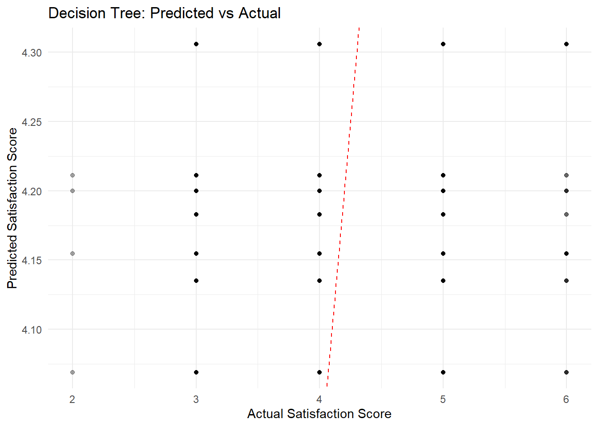
6.4 Residual Plot
tree_valid_pred <- tree_valid_pred %>%
mutate(residual = satisfaction_score - .pred)
ggplot(tree_valid_pred, aes(x = .pred, y = residual)) +
geom_point(alpha = 0.35) +
geom_hline(yintercept = 0, linetype = "dashed", color = "red") +
labs(
title = "Decision Tree: Residual Plot",
x = "Predicted Satisfaction Score",
y = "Residual"
)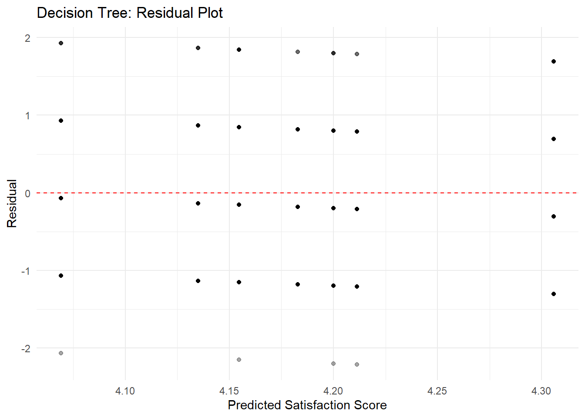
6.5 Decision Tree Visualization
tree_engine_fit <- extract_fit_engine(final_tree_fit)
rpart.plot(
tree_engine_fit,
type = 3,
fallen.leaves = TRUE,
tweak = 1.1,
roundint = FALSE
)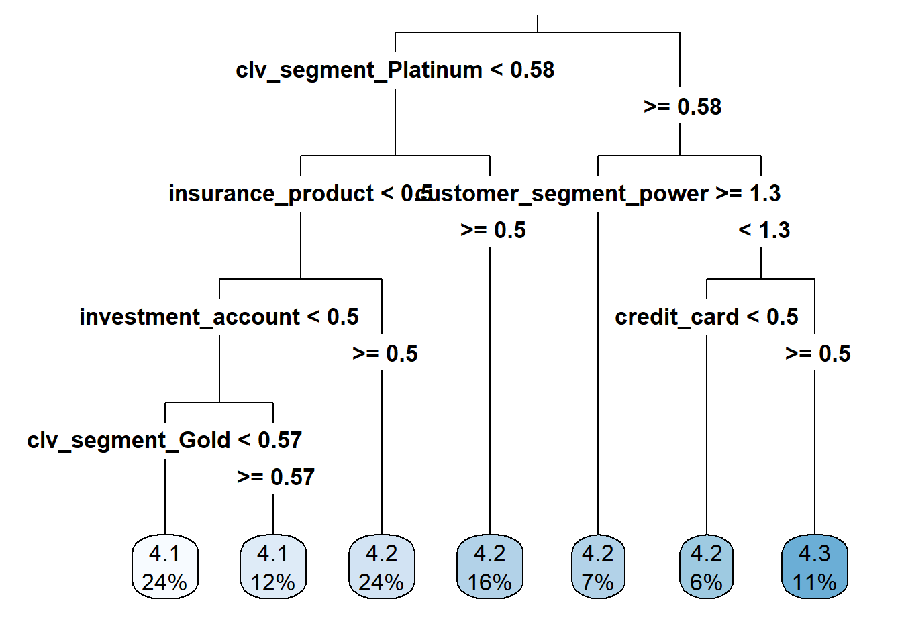
7 Random Forest Regression Model
Random Forest Regression is used to improve predictive performance and provide more stable importance estimates across predictors.
rf_spec <- rand_forest(
mode = "regression",
mtry = tune(),
min_n = tune(),
trees = tune()
) %>%
set_engine("ranger", importance = "permutation")Because mtry depends on the number of predictors after preprocessing, the tuning space is finalized through the workflow.
rf_workflow <- workflow() %>%
add_recipe(base_recipe) %>%
add_model(rf_spec)
rf_param <- rf_workflow %>%
extract_parameter_set_dials() %>%
finalize(train_data) %>%
update(
trees = trees(c(200L, 800L)),
min_n = min_n(c(5L, 25L))
)
set.seed(1234)
rf_grid <- grid_random(rf_param, size = 20)library(doParallel)
n_cores <- max(1, parallel::detectCores() - 1)
cl <- makePSOCKcluster(n_cores)
registerDoParallel(cl)
set.seed(1234)
rf_tuned <- tune_grid(
rf_workflow,
resamples = cv_folds,
grid = rf_grid,
metrics = reg_metrics,
control = control_grid(
verbose = TRUE,
allow_par = TRUE,
save_pred = TRUE
)
)
stopCluster(cl)
registerDoSEQ()
dir.create("models", showWarnings = FALSE)
saveRDS(rf_tuned, "models/rf_tuned.rds")7.1 Best Validation Settings
show_best(rf_tuned, metric = "rmse")# A tibble: 5 × 9
mtry trees min_n .metric .estimator mean n std_err .config
<int> <int> <int> <chr> <chr> <dbl> <int> <dbl> <chr>
1 5 623 19 rmse standard 0.572 5 0.00327 pre0_mod05_post0
2 4 504 25 rmse standard 0.572 5 0.00330 pre0_mod03_post0
3 3 420 11 rmse standard 0.572 5 0.00316 pre0_mod01_post0
4 6 497 17 rmse standard 0.572 5 0.00325 pre0_mod06_post0
5 4 557 10 rmse standard 0.573 5 0.00318 pre0_mod04_post0if (file.exists("models/final_rf_fit.rds")) {
final_rf_fit <- readRDS("models/final_rf_fit.rds")
} else {
best_rf <- select_best(rf_tuned, metric = "rmse")
final_rf_workflow <- finalize_workflow(rf_workflow, best_rf)
final_rf_fit <- fit(final_rf_workflow, data = train_data)
saveRDS(final_rf_fit, "models/final_rf_fit.rds")
}7.2 Validation Performance
rf_valid_pred <- predict(final_rf_fit, new_data = valid_data) %>%
bind_cols(valid_data %>% select(satisfaction_score))
rf_valid_metrics <- reg_metrics(
rf_valid_pred,
truth = satisfaction_score,
estimate = .pred
)
rf_valid_metrics# A tibble: 3 × 3
.metric .estimator .estimate
<chr> <chr> <dbl>
1 rmse standard 0.579
2 mae standard 0.431
3 rsq standard 0.01457.3 Predicted vs Actual Plot
ggplot(rf_valid_pred, aes(x = satisfaction_score, y = .pred)) +
geom_point(alpha = 0.35) +
geom_abline(slope = 1, intercept = 0, linetype = "dashed", color = "red") +
labs(
title = "Random Forest: Predicted vs Actual",
x = "Actual Satisfaction Score",
y = "Predicted Satisfaction Score"
)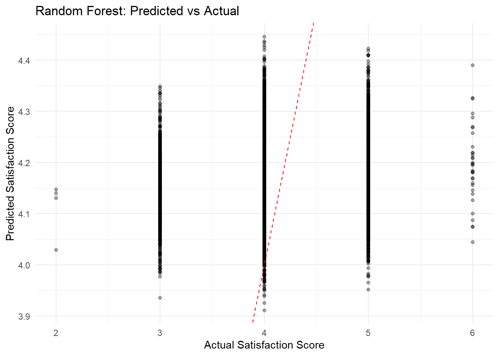
7.4 Residual Plot
rf_valid_pred <- rf_valid_pred %>%
mutate(residual = satisfaction_score - .pred)
ggplot(rf_valid_pred, aes(x = .pred, y = residual)) +
geom_point(alpha = 0.35) +
geom_hline(yintercept = 0, linetype = "dashed", color = "red") +
labs(
title = "Random Forest: Residual Plot",
x = "Predicted Satisfaction Score",
y = "Residual"
)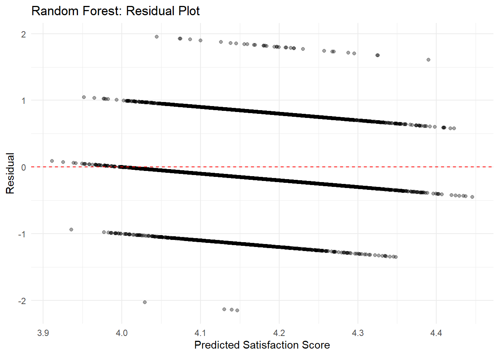
7.5 Feature Importance Plot
rf_engine_fit <- extract_fit_parsnip(final_rf_fit)$fit
vip(rf_engine_fit, num_features = 15) +
labs(
title = "Random Forest: Top 15 Important Features"
)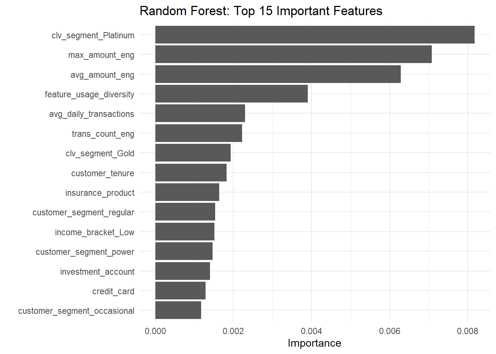
8 Validation Performance Comparison of All 3 models
The validation results of all three models are compared below.
validation_results <- bind_rows(
lm_valid_metrics %>% mutate(model = "Linear Regression"),
tree_valid_metrics %>% mutate(model = "Decision Tree"),
rf_valid_metrics %>% mutate(model = "Random Forest")
) %>%
select(model, .metric, .estimate)
validation_results# A tibble: 9 × 3
model .metric .estimate
<chr> <chr> <dbl>
1 Linear Regression rmse 0.577
2 Linear Regression mae 0.426
3 Linear Regression rsq 0.0233
4 Decision Tree rmse 0.580
5 Decision Tree mae 0.430
6 Decision Tree rsq 0.0118
7 Random Forest rmse 0.579
8 Random Forest mae 0.431
9 Random Forest rsq 0.0145ggplot(validation_results, aes(x = model, y = .estimate, fill = model)) +
geom_col(show.legend = FALSE) +
facet_wrap(~ .metric, scales = "free_y") +
labs(
title = "Validation Performance Comparison Across Models",
x = NULL,
y = "Metric Value"
) +
theme(axis.text.x = element_text(angle = 20, hjust = 1))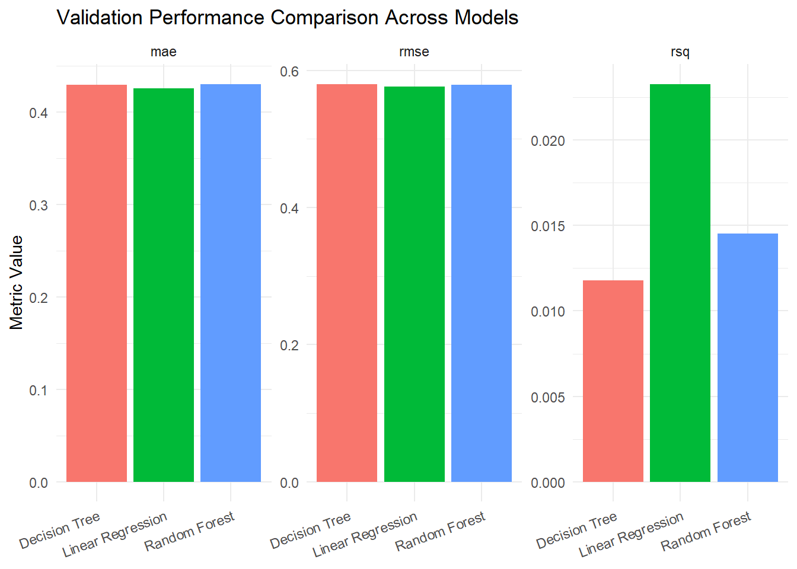
9 Final Model Evaluation on Test Set
To provide a fair final comparison, all three models are refit on the combined training and validation datasets, then evaluated on the holdout test set.
train_valid_data <- bind_rows(train_data, valid_data)9.1 Refit All Models on Training + Validation Data
final_lm_fit <- fit(lm_workflow, data = train_valid_data)
final_tree_fit_trainvalid <- fit(final_tree_workflow, data = train_valid_data)
final_rf_fit_trainvalid <- fit(final_rf_workflow, data = train_valid_data)9.2 Generate Test Predictions
lm_test_pred <- predict(final_lm_fit, new_data = test_data) %>%
bind_cols(test_data %>% select(satisfaction_score)) %>%
mutate(model = "Linear Regression")
tree_test_pred <- predict(final_tree_fit_trainvalid, new_data = test_data) %>%
bind_cols(test_data %>% select(satisfaction_score)) %>%
mutate(model = "Decision Tree")
rf_test_pred <- predict(final_rf_fit_trainvalid, new_data = test_data) %>%
bind_cols(test_data %>% select(satisfaction_score)) %>%
mutate(model = "Random Forest")9.3 Compute Test Metrics
lm_test_metrics <- reg_metrics(
lm_test_pred,
truth = satisfaction_score,
estimate = .pred
) %>%
mutate(model = "Linear Regression")
tree_test_metrics <- reg_metrics(
tree_test_pred,
truth = satisfaction_score,
estimate = .pred
) %>%
mutate(model = "Decision Tree")
rf_test_metrics <- reg_metrics(
rf_test_pred,
truth = satisfaction_score,
estimate = .pred
) %>%
mutate(model = "Random Forest")test_results <- bind_rows(
lm_test_metrics,
tree_test_metrics,
rf_test_metrics
) %>%
select(model, .metric, .estimate)
test_results# A tibble: 9 × 3
model .metric .estimate
<chr> <chr> <dbl>
1 Linear Regression rmse 0.573
2 Linear Regression mae 0.423
3 Linear Regression rsq 0.0235
4 Decision Tree rmse 0.576
5 Decision Tree mae 0.427
6 Decision Tree rsq 0.0127
7 Random Forest rmse 0.576
8 Random Forest mae 0.428
9 Random Forest rsq 0.01309.4 Test Performance Comparison
ggplot(test_results, aes(x = model, y = .estimate, fill = model)) +
geom_col(show.legend = FALSE) +
facet_wrap(~ .metric, scales = "free_y") +
labs(
title = "Test Performance Comparison Across Models",
x = NULL,
y = "Metric Value"
) +
theme(axis.text.x = element_text(angle = 20, hjust = 1))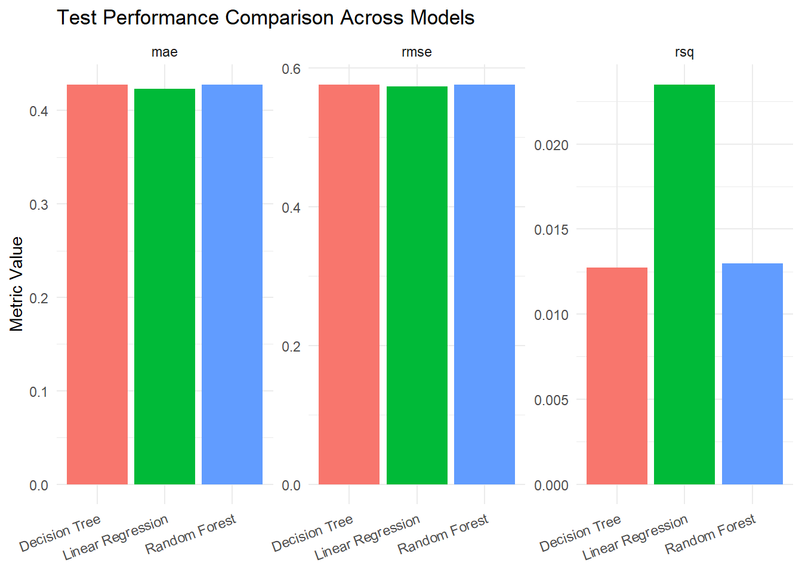
10 Ordial Regression Pipeline
As an alternative to treating satisfaction_score as a continuous variable, an ordinal regression pipeline can also be used to reflect the ordered categorical nature of the Likert-scale target. In this formulation, satisfaction_score is converted into an ordered factor, and a cumulative link model is fitted using the ordinal package. This approach estimates the probability of a customer belonging to higher or lower satisfaction categories while preserving the ranking structure of the outcome variable. Model performance can then be evaluated using classification-oriented metrics such as accuracy, Cohen’s kappa, macro F1, and confusion matrices.
10.1 Load package
pacman::p_load(ordinal, yardstick)10.2 Convert target to ordered factor
model_data_ord <- model_data %>%
mutate(
satisfaction_score = factor(
satisfaction_score,
levels = sort(unique(satisfaction_score)),
ordered = TRUE
)
)10.3 Split the data
set.seed(1234)
initial_split_ord <- initial_split(model_data_ord, prop = 0.70)
train_data_ord <- training(initial_split_ord)
temp_data_ord <- testing(initial_split_ord)
set.seed(1234)
temp_split_ord <- initial_split(temp_data_ord, prop = 0.50)
valid_data_ord <- training(temp_split_ord)
test_data_ord <- testing(temp_split_ord)10.4 Split the data
Use the ordinal target dataset.
set.seed(1234)
initial_split_ord <- initial_split(model_data_ord, prop = 0.70)
train_data_ord <- training(initial_split_ord)
temp_data_ord <- testing(initial_split_ord)
set.seed(1234)
temp_split_ord <- initial_split(temp_data_ord, prop = 0.50)
valid_data_ord <- training(temp_split_ord)
test_data_ord <- testing(temp_split_ord)10.5 Preprocessing recipe
ord_recipe <- recipe(satisfaction_score ~ ., data = train_data_ord) %>%
step_impute_median(all_numeric_predictors()) %>%
step_impute_mode(all_nominal_predictors()) %>%
step_dummy(all_nominal_predictors()) %>%
step_zv(all_predictors()) %>%
step_normalize(all_numeric_predictors())10.6 Prep and bake data
Because clm() is not directly integrated into parsnip the same way as lm or rand_forest, the easiest way is:
ord_prep <- prep(ord_recipe)
train_baked_ord <- bake(ord_prep, new_data = train_data_ord)
valid_baked_ord <- bake(ord_prep, new_data = valid_data_ord)
test_baked_ord <- bake(ord_prep, new_data = test_data_ord)10.7 Fit ordinal regression model
ord_model <- ordinal::clm(
satisfaction_score ~ .,
data = train_baked_ord
)10.8 Summary of the model
summary(ord_model)formula:
satisfaction_score ~ age + household_size + savings_account + credit_card + personal_loan + investment_account + insurance_product + active_products + app_logins_frequency + feature_usage_diversity + bill_payment_user + auto_savings_enabled + credit_utilization_ratio + international_transactions + failed_transactions + support_tickets_count + resolved_tickets_ratio + app_store_rating + avg_daily_transactions + customer_tenure + trans_count_eng + avg_amount_eng + max_amount_eng + gender_Male + gender_Other + income_bracket_Low + income_bracket_Medium + income_bracket_Very.High + education_level_High.School + education_level_Master + education_level_PhD + marital_status_Married + marital_status_Single + marital_status_Widowed + acquisition_channel_Paid.Ad + acquisition_channel_Partnership + acquisition_channel_Referral + customer_segment_occasional + customer_segment_power + customer_segment_regular + feedback_sentiment_Neutral + feedback_sentiment_Positive + clv_segment_Gold + clv_segment_Platinum + clv_segment_Silver + preferred_transaction_type_Payment + preferred_transaction_type_Transfer + preferred_transaction_type_Withdrawal
data: train_baked_ord
link threshold nobs logLik AIC niter max.grad cond.H
logit flexible 34106 -29258.33 58620.65 10(0) 4.64e-10 3.1e+03
Coefficients:
Estimate Std. Error z value Pr(>|z|)
age 0.031346 0.012984 2.414 0.015772 *
household_size 0.015133 0.011236 1.347 0.178064
savings_accountTRUE 0.108250 0.032109 3.371 0.000748 ***
credit_cardTRUE 0.148555 0.026744 5.555 2.78e-08 ***
personal_loanTRUE 0.123767 0.026093 4.743 2.10e-06 ***
investment_accountTRUE 0.163647 0.025231 6.486 8.82e-11 ***
insurance_productTRUE 0.250365 0.028767 8.703 < 2e-16 ***
active_products 0.004028 0.011228 0.359 0.719767
app_logins_frequency -0.018904 0.011263 -1.678 0.093274 .
feature_usage_diversity -0.015639 0.015062 -1.038 0.299143
bill_payment_userTRUE -0.014994 0.024531 -0.611 0.541062
auto_savings_enabledTRUE 0.025761 0.022892 1.125 0.260452
credit_utilization_ratio 0.015157 0.011213 1.352 0.176466
international_transactions 0.001957 0.011261 0.174 0.862034
failed_transactions 0.012515 0.011255 1.112 0.266131
support_tickets_count 0.003974 0.014280 0.278 0.780780
resolved_tickets_ratio -0.012403 0.014286 -0.868 0.385269
app_store_rating -0.021322 0.019247 -1.108 0.267943
avg_daily_transactions -0.011249 0.010760 -1.045 0.295805
customer_tenure 0.019776 0.011311 1.748 0.080393 .
trans_count_eng -0.001115 0.011283 -0.099 0.921262
avg_amount_eng -0.057566 0.022755 -2.530 0.011414 *
max_amount_eng 0.051786 0.021823 2.373 0.017644 *
gender_Male 0.006893 0.011337 0.608 0.543211
gender_Other -0.004310 0.011382 -0.379 0.704966
income_bracket_Low 0.001540 0.018019 0.085 0.931877
income_bracket_Medium 0.005834 0.015477 0.377 0.706229
income_bracket_Very.High 0.005111 0.012621 0.405 0.685543
education_level_High.School 0.012996 0.013378 0.971 0.331325
education_level_Master 0.022733 0.012810 1.775 0.075954 .
education_level_PhD -0.002957 0.012921 -0.229 0.819000
marital_status_Married -0.028330 0.019459 -1.456 0.145428
marital_status_Single -0.003638 0.019498 -0.187 0.851969
marital_status_Widowed -0.014960 0.013417 -1.115 0.264874
acquisition_channel_Paid.Ad 0.014583 0.012296 1.186 0.235642
acquisition_channel_Partnership 0.016919 0.011931 1.418 0.156177
acquisition_channel_Referral -0.002488 0.012445 -0.200 0.841523
customer_segment_occasional -0.074177 0.016004 -4.635 3.57e-06 ***
customer_segment_power -0.176807 0.016711 -10.580 < 2e-16 ***
customer_segment_regular -0.183243 0.017799 -10.295 < 2e-16 ***
feedback_sentiment_Neutral -0.003374 0.029550 -0.114 0.909086
feedback_sentiment_Positive 0.020506 0.037476 0.547 0.584265
clv_segment_Gold 0.205795 0.015851 12.983 < 2e-16 ***
clv_segment_Platinum 0.355079 0.017042 20.835 < 2e-16 ***
clv_segment_Silver 0.105548 0.014825 7.120 1.08e-12 ***
preferred_transaction_type_Payment -0.020367 0.047663 -0.427 0.669149
preferred_transaction_type_Transfer -0.019187 0.049643 -0.386 0.699128
preferred_transaction_type_Withdrawal -0.006166 0.021408 -0.288 0.773342
---
Signif. codes: 0 '***' 0.001 '**' 0.01 '*' 0.05 '.' 0.1 ' ' 1
Threshold coefficients:
Estimate Std. Error z value
2|3 -8.06959 0.35610 -22.66
3|4 -1.96925 0.04618 -42.64
4|5 1.45678 0.04513 32.28
5|6 5.82352 0.09303 62.6010.9 Generate predictions on validation set
For classification output:
ord_valid_class <- predict(ord_model, newdata = valid_baked_ord, type = "class")$fitAttach predictions:
ord_valid_pred <- valid_baked_ord %>%
select(satisfaction_score) %>%
mutate(.pred_class = ord_valid_class)10.10 Evaluate ordinal model
accuracy(ord_valid_pred, truth = satisfaction_score, estimate = .pred_class)# A tibble: 1 × 3
.metric .estimator .estimate
<chr> <chr> <dbl>
1 accuracy multiclass 0.648kap(ord_valid_pred, truth = satisfaction_score, estimate = .pred_class)# A tibble: 1 × 3
.metric .estimator .estimate
<chr> <chr> <dbl>
1 kap multiclass -0.000555Confusion matrix:
conf_mat(ord_valid_pred, truth = satisfaction_score, estimate = .pred_class) Truth
Prediction 2 3 4 5 6
2 0 0 0 0 0
3 0 0 0 0 0
4 4 695 4731 1836 33
5 0 1 6 1 1
6 0 0 0 0 010.11 Test evaluation pipeline
10.11.1 Refit using training + validation data
train_valid_data_ord <- bind_rows(train_data_ord, valid_data_ord)Prep again:
ord_recipe_final <- recipe(satisfaction_score ~ ., data = train_valid_data_ord) %>%
step_impute_median(all_numeric_predictors()) %>%
step_impute_mode(all_nominal_predictors()) %>%
step_dummy(all_nominal_predictors()) %>%
step_zv(all_predictors()) %>%
step_normalize(all_numeric_predictors())
ord_prep_final <- prep(ord_recipe_final)
train_valid_baked_ord <- bake(ord_prep_final, new_data = train_valid_data_ord)
test_baked_ord_final <- bake(ord_prep_final, new_data = test_data_ord)final_ord_model <- ordinal::clm(
satisfaction_score ~ .,
data = train_valid_baked_ord
)10.11.2 Predict on test set:
ord_test_class <- predict(final_ord_model, newdata = test_baked_ord_final, type = "class")$fit
ord_test_pred <- test_baked_ord_final %>%
select(satisfaction_score) %>%
mutate(.pred_class = ord_test_class)10.12 Visual outputs for Ordinal Regression
Confusion heat map
ord_cm <- conf_mat(ord_test_pred, truth = satisfaction_score, estimate = .pred_class)
autoplot(ord_cm, type = "heatmap")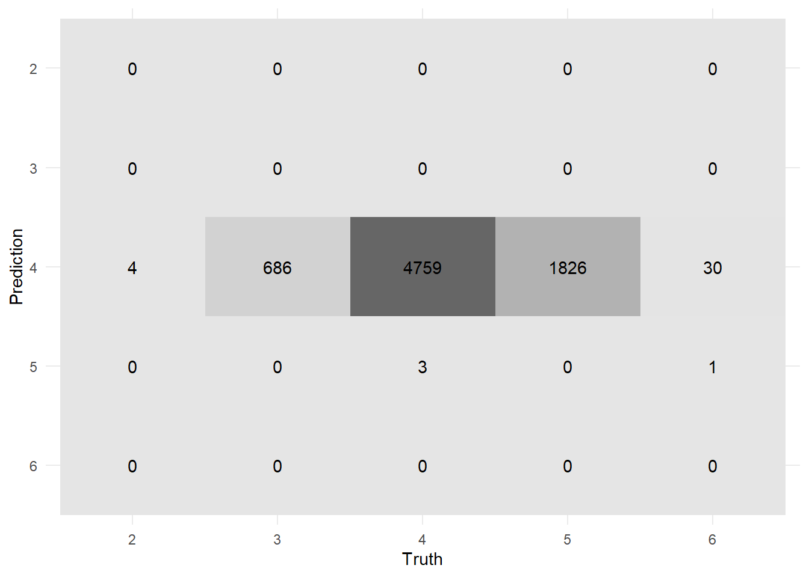
10.13 Class distribution of predictions
ggplot(ord_test_pred, aes(x = .pred_class)) +
geom_bar(fill = "steelblue") +
labs(
title = "Predicted Satisfaction Score Distribution (Ordinal Regression)",
x = "Predicted Class",
y = "Count"
)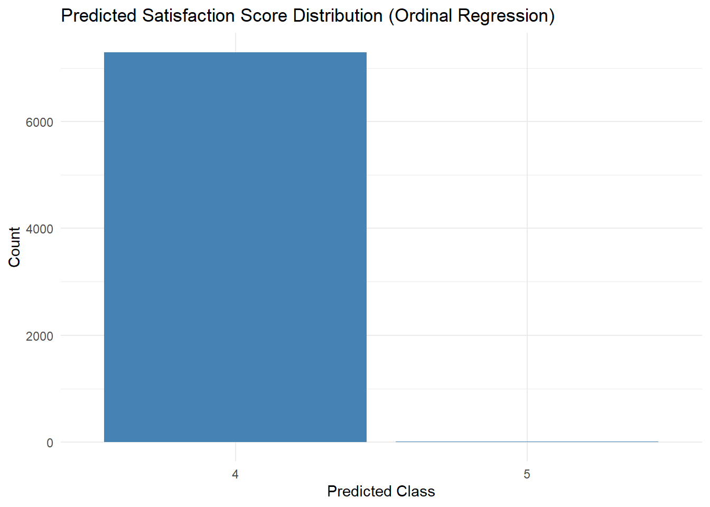
10.14 Actual vs predicted category comparison
ggplot(ord_test_pred, aes(x = satisfaction_score, fill = .pred_class)) +
geom_bar(position = "dodge") +
labs(
title = "Actual vs Predicted Satisfaction Categories",
x = "Actual Satisfaction Score",
y = "Count",
fill = "Predicted Score"
)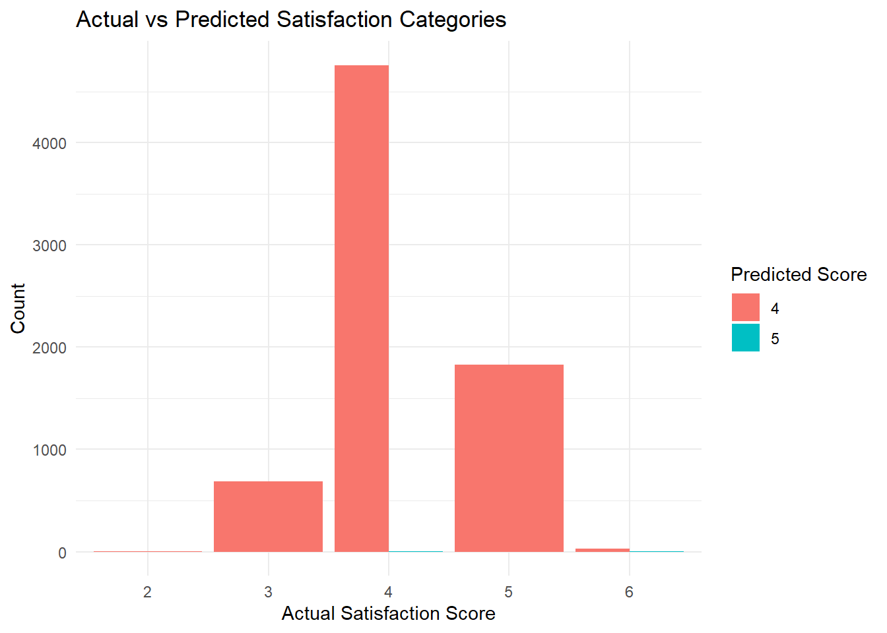
11 Conclusion from predicting Satisfaction Score
The predictive modelling analysis aimed to estimate customer satisfaction using demographic, behavioural, and digital engagement variables from the COFINFAD dataset. Linear Regression, Decision Tree, and Random Forest models were implemented, with an additional ordinal regression formulation to reflect the ordered nature of the satisfaction score.
Across all models, predictive performance remained modest. The regression models produced similar MAE and RMSE values, while the R² values were low, indicating that the available predictors explain only a small portion of the variation in customer satisfaction. The ordinal regression model produced comparable results, with predictions concentrated around the most common satisfaction category.
These findings suggest that demographic attributes and financial behaviour alone are insufficient to fully explain variations in customer satisfaction. Satisfaction is likely influenced by additional factors such as service quality perception, user experience, and individual expectations that are not captured in the dataset.
Given that the project objective focuses on understanding the drivers of financial activity within the Colombian fintech ecosystem, the subsequent analysis shifts toward modelling transaction behaviour, which more directly reflects customer financial activity.